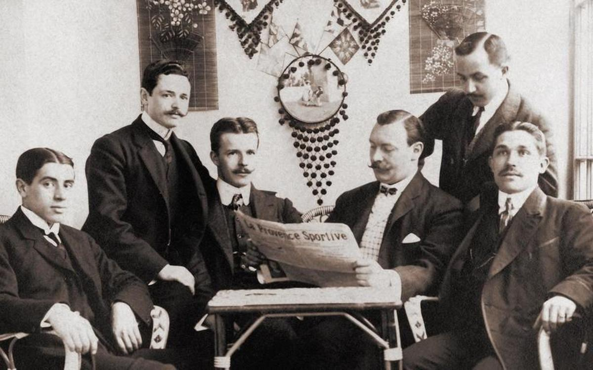

About FC Barçelona
FC Barcelona was founded in 1899 by a group of young foreignors living in Barcelona, was the ruslt of the increasing popularity of football, and other British sports, across Europe.
 Hans Gamper arrived in Barcelona in 1898 for professional reasons. In his free time we played football with a group of friends in Bonanova. In October 1899, Gamer placed an advertisement. On 29 November, him and other 11 other men came together at Solé Gymnasium to form an association that would bear the city's name and coat of arms: Futbol Club Barcelona.
Hans Gamper arrived in Barcelona in 1898 for professional reasons. In his free time we played football with a group of friends in Bonanova. In October 1899, Gamer placed an advertisement. On 29 November, him and other 11 other men came together at Solé Gymnasium to form an association that would bear the city's name and coat of arms: Futbol Club Barcelona.
FC Barcelona decided to use the same badge as the city of Barcelona in a show of solidarity with the city that played host the new sports' club. In 1900 the board decided that the team needed its own badge, so they organdized a competition to find a new design and it adopted the format that with one or two different type's of designs. The final desgin of the badge of FC Barcelona was in 2002